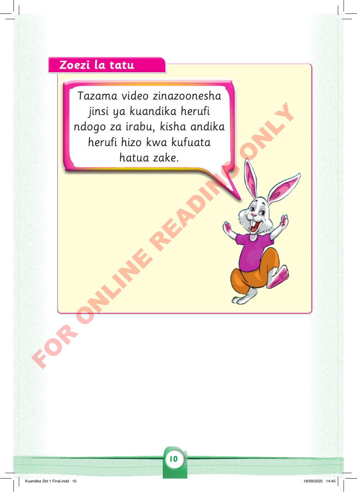

Zoezi la tatu
Tazama video zinazoonesha jinsi ya kuandika herufi ndogo za irabu, kisha andika herufi hizo kwa kufuata hatua zake.

Tazama video zinazoonesha jinsi ya kuandika herufi ndogo za irabu, kisha andika herufi hizo kwa kufuata hatua zake.